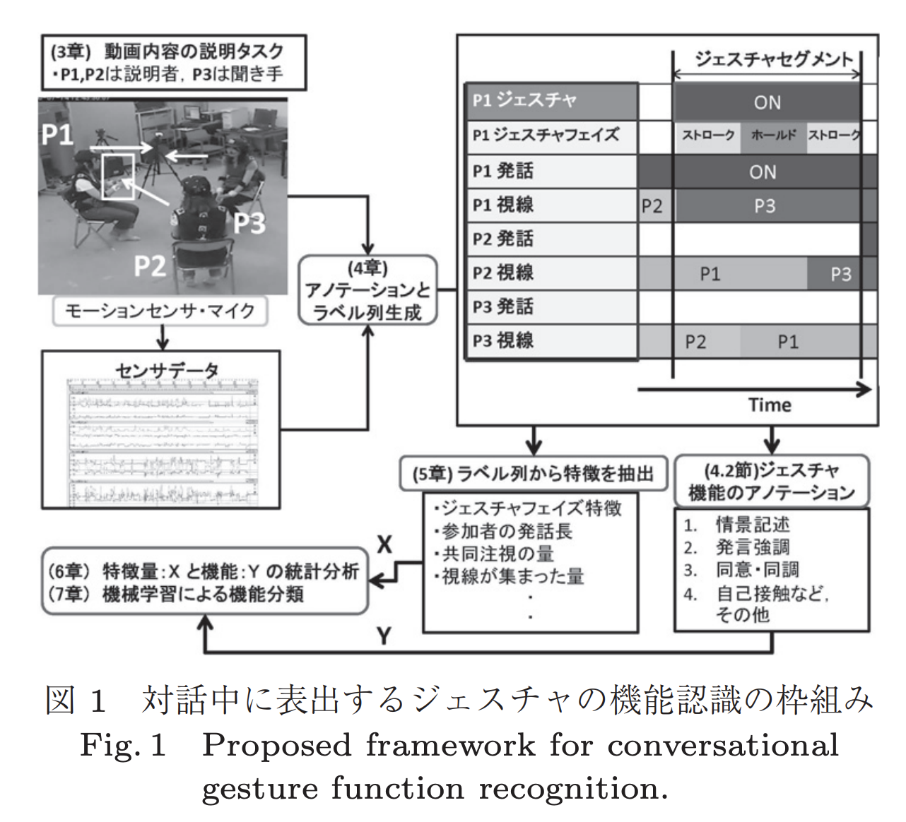

非言語マルチモーダル情報を利用したグループ対話におけるジェスチャの機能認識
会話エージェント，会話記録支援システムなどの高度なヒューマンコミュニケーションシステムの実現には，対話中に交わされる言語情報だけでなく視線・ジェスチャといった非言語情報の認識技術が必要である． 本研究ではグループ対話中に表出するハンドジェスチャの機能を認識する枠組みを提案する．
対話中に用いられる情景記述，発言の強調・調整などのジェスチャの機能を認識するために，（1）Kendonにより提案されたジェスチャフェイズに関する特徴量，（2）ジェスチャと共起した発話・視線などのマルチモーダル特徴量を抽出する．3者の対話タスクを行い，対話中に観測されるジェスチャ・発話・視線情報にアノテーションを付与した後に，（1）（2）に関して複数の特徴量を定義し，抽出した．機械学習を用いてジェスチャの機能の認識実験を行った結果，提案する特徴量を用いることにより認識精度を示すF値が，手の動作特徴だけを用いた場合よりも0.28ポイント向上することが確認された．
full version link 